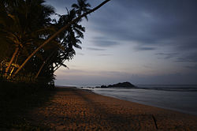

colombo
Botanical/zoological gardens
unawatuna

Sri Lanka possesses nearly 1600 km coastlines with tropical beaches which are popular among both local and foreign tourists. Most of the coastlines of the country are studded with varying coastal features such as bays, lagoons, sandbanks, and rocky headlands. Marine recreation activities, such as sea bathing and swimming, surfing, boating, snorkelling, deep-sea fishing, underwater photography, and scuba diving, can be seen at most of these beaches and related resort areas. Beaches at Tangalle, Beruwala, Mirissa, Bentota, Unawatuna Arugam Bay, Pasikudah, Hikkaduwa, Uppuveli and Negombo are considered as famous tourist beaches in the country.